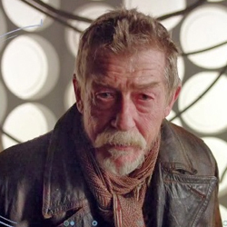

| Home | The Doctors | The Companions | The Villains |
| cf
The War DoctorBorn from the Eighth Doctor’s choice on Karn, at the height of the Last Great Time War, this incarnation was the Doctor’s darkest secret. A battle-hardened warrior, rather than a healer. A man who saw so much death and destruction in the Time War, that finally, at the fall of Arcadia, he proclaimed “No more”. Stealing the Moment - a sentient weapon of great power - he planned to kill all Time Lords and the Daleks, in the name of peace and of sanity. Persuaded otherwise by his Tenth and Eleventh selves, he helped all the Doctor’s incarnations freeze Gallifrey in a pocket universe, and end the War. Returning to his TARDIS, and with his body wearing a bit thin once more, he began to regenerate… |